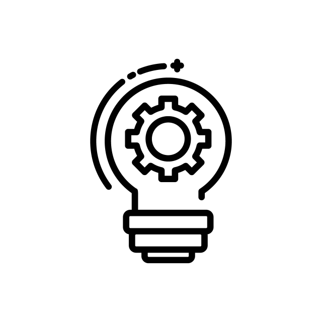

Microsoft tiene varios objetivos clave que busca cumplir con su sistema operativo Windows. Estos objetivos han evolucionado a lo largo de los años y pueden variar de una versión a otra, pero algunos de los objetivos generales incluyen:

Mercado
Microsoft busca mantener su dominio en el mercado de sistemas operativos para PC, asegurando que la mayoría de los usuarios de computadoras personales utilicen Windows.

Productividad
Windows se ha diseñado para ser un entorno de trabajo productivo, ofreciendo una amplia gama de aplicaciones y herramientas que permiten a los usuarios realizar tareas comerciales y personales de manera eficiente.

Compatibilidad
Microsoft se esfuerza por mantener la compatibilidad con versiones anteriores y garantizar que las actualizaciones de Windows sean fluidas y no causen interrupciones significativas para los usuarios.

Seguridad
Seguridad y privacidad: Mejorar la seguridad y la privacidad es una prioridad constante. Microsoft trabaja en la implementación de medidas de seguridad, como Windows Defender, y en el fortalecimiento de la protección de la privacidad de los usuarios.
Usuario intuitivo
Experiencia de usuario intuitiva: Windows busca proporcionar una experiencia de usuario intuitiva y fácil de usar, con interfaces de usuario amigables y accesibles para una amplia audiencia.

Soporte
Soporte para hardware diverso: Microsoft se esfuerza por garantizar que Windows sea compatible con una amplia variedad de hardware, desde computadoras de escritorio hasta dispositivos móviles y servidores.

Inovación
Microsoft busca mantenerse a la vanguardia de la innovación tecnológica, incorporando nuevas características y capacidades en Windows para mantenerse relevante en un mercado en constante evolución.

Desarrollo
Windows proporciona una plataforma para que los desarrolladores creen aplicaciones y software que puedan ejecutarse en el sistema operativo, lo que fomenta el crecimiento del ecosistema de software de Windows.
Nube
Microsoft está integrando cada vez más sus servicios en la nube, como OneDrive y Microsoft 365, con Windows para ofrecer una experiencia más conectada y colaborativa.